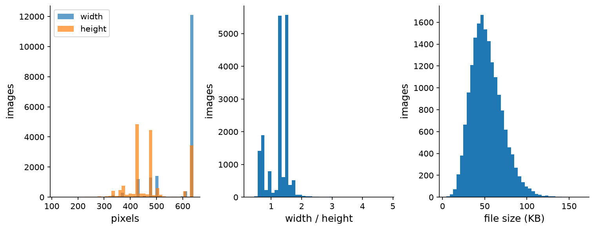
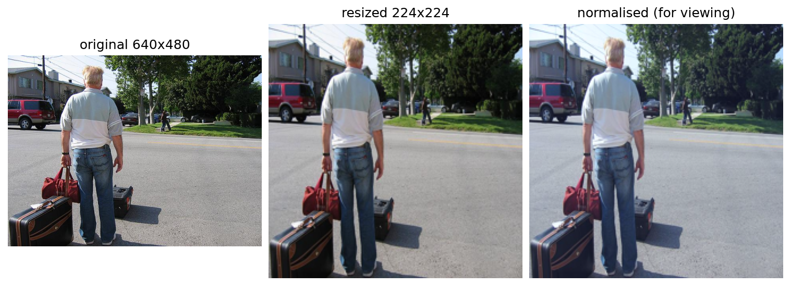
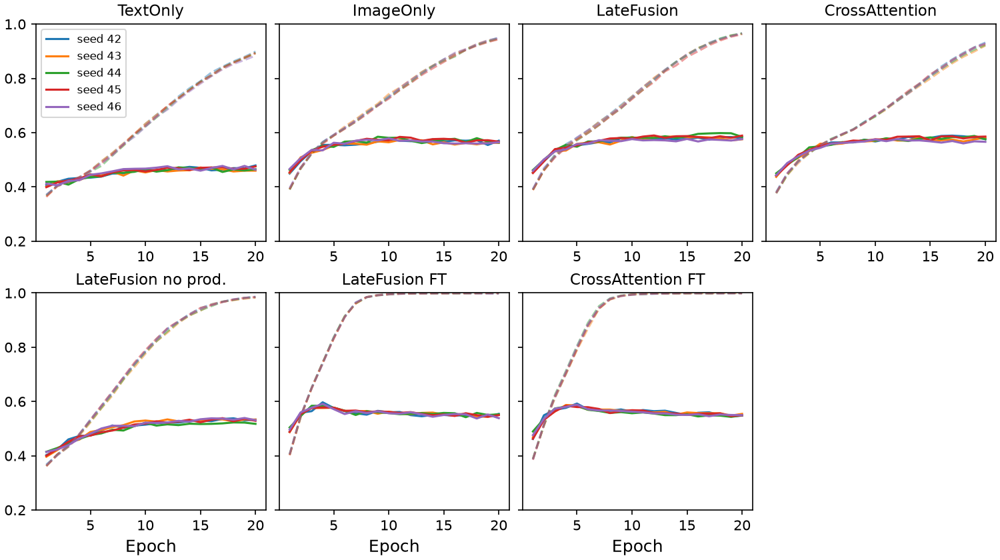
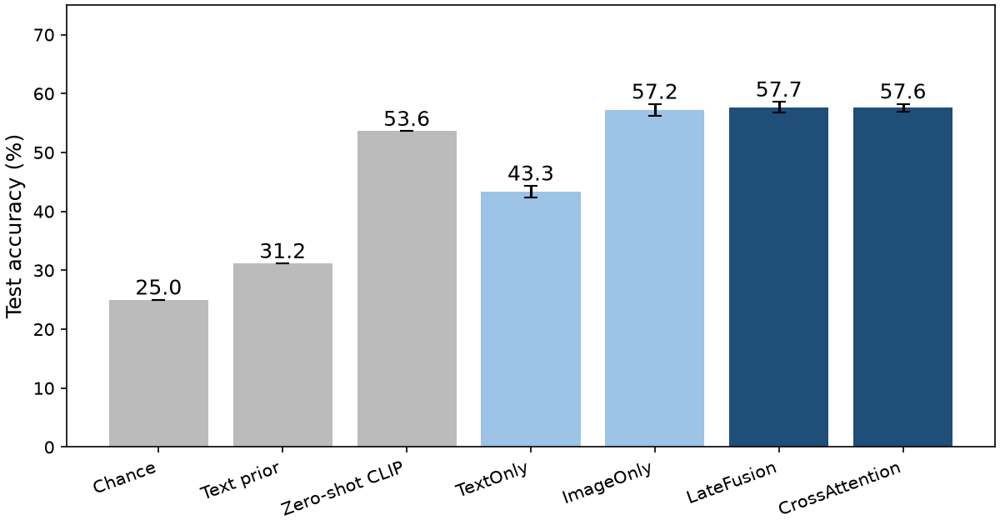
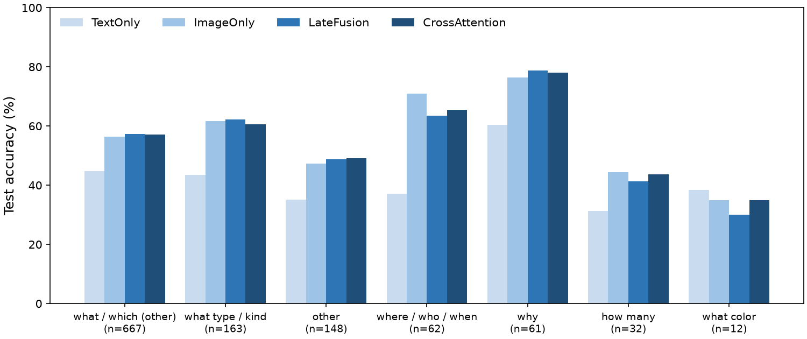
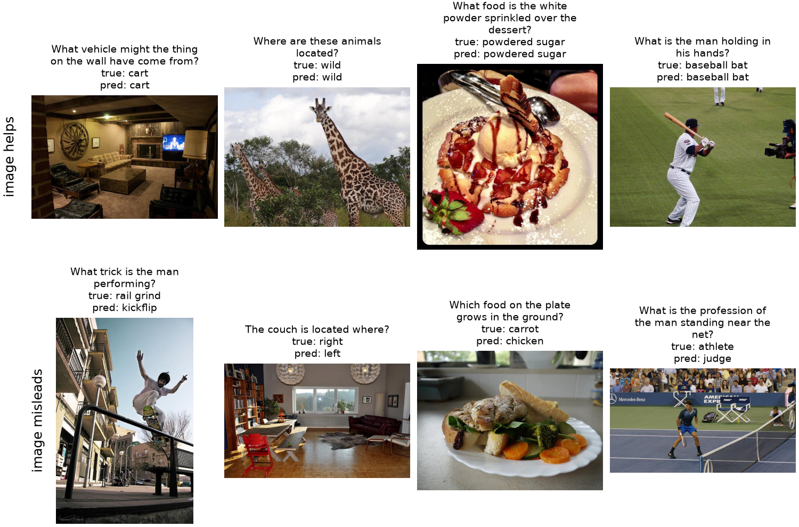
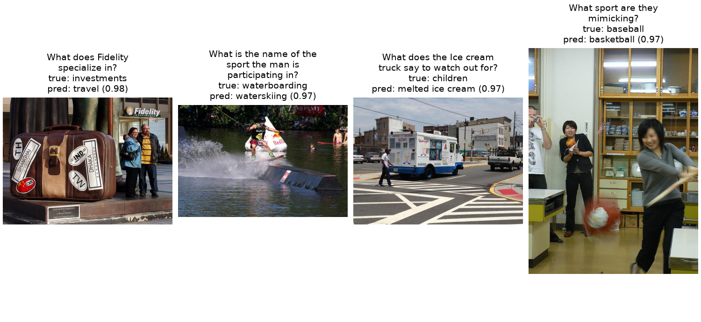

M3 Final PDF report
Professional report - 21 pages
Preview PDF
Source: Assignment3/ (features.py, models.py, train.py, 02_results.ipynb, configs/a3.yaml). Slides: A3_M3_slides.pdf. Checkpoints: rebuilt with the commands in the README (one best.pt per run). YouTube video: pending.
Problem and data description
Problem statement
Visual question answering (VQA) asks a model to answer a question about an image. In A-OKVQA the questions also need commonsense or world knowledge: “what does this company specialise in”, “which gang wears these colours”. Each question comes with 4 choices, so the task is multiple-choice classification over the choices. The prediction unit is one (image, question) pair.
Main difficulties. (1) Two modalities must be combined: the image shows what is there, the question and the choices say what to do with it. (2) Many answers need knowledge that is not visible. (3) The training set is small for a multimodal model (15,346 questions), so we use frozen pretrained encoders. (4) Workers often disagree on the free-form answer (32.4% of questions have low agreement).
Research question. How much does each modality contribute, and does a token-level fusion of image and text help over a simple late fusion of global vectors?
Source, version and licence
Dataset: A-OKVQA [1], a visual question answering benchmark whose questions need commonsense or world knowledge in addition to what is visible in the image.
https://huggingface.co/datasets/HuggingFaceM4/A-OKVQA
Version: Hugging Face revision d1b0efa (d1b0efa3a436e9101dfbde3752db7607da696c35), downloaded on 9 November 2026 with Assignment3/download.py. Parquet files with the JPEG bytes inside, about 1.2 GB in total.
Licence: the A-OKVQA annotations are released by AllenAI under Apache 2.0. The images are COCO 2017 photos [2], which keep their Flickr licences; we use them only for course work.
How the data was made: crowd workers looked at a COCO image and wrote a question that cannot be answered from the image alone or from knowledge alone. Each question has 4 answer choices, 10 free-form answers from 10 different workers, and 3 short rationales that explain the answer.
Task, modalities, input and output
Task: multiple-choice VQA. One sample is one image with one question and exactly 4 choices.
| Item | Definition |
|---|---|
| Modality A | Text: the question (mean 8.8 words) and the 4 choice texts (mean 1.3 words) |
| Modality B | Image: one RGB COCO photo (median 640×480), resized to 224×224 |
| Extra annotation | 10 direct answers and 3 rationales per question. Used for evaluation and analysis only, never as model input |
| Output | Index of the correct choice, ŷ∈{0,1,2,3} |
| Prediction unit | One (image, question) pair |
Formulation. For choice j the model gives a score sj = fθ(image, question, choicej), pj = softmaxj(sj) and ŷ = argmaxj pj. Training minimises the cross-entropy -log py.
Why this task is multimodal. A worker wrote each question while looking at that image, so the pair is linked by the same scene. The answer needs both: the image says what is there (a red shirt, a clock at seven), and the question with the choices says what to do with it (which gang wears red, what hour it is). Section shows that text alone gets only a few points above chance.
Size
The handbook asks for about 10,000 question–image pairs for VQA. The official test split (6,702 questions) has no public labels, so we count only labelled pairs: 17,056 (train) + 1,145 (validation) = 18,201 labelled pairs on 17,661 images, which meets the threshold.
Proposal and approval status
The dataset proposal (A3-M1) was submitted with this protocol. At the time of writing no formal decision had been returned by the instructor. The group checked the proposal against the handbook rules (Section 28: genuine pairs, about 10,000 pairs for VQA, split by entity) and continued with the plan; any later condition from the instructor will be added to the assignment page.
Exploratory data analysis
Source: Assignment3/01_eda.ipynb.
Pair counts and missing modalities
| Official split | Questions | Labelled | Distinct images | Images with 2 questions |
|---|---|---|---|---|
| train | 17,056 | 17,056 | 16,539 | 517 |
| validation | 1,145 | 1,145 | 1,122 | 23 |
| test | 6,702 | 0 | 6,030 |
| Check on the 18,201 labelled questions | Result |
|---|---|
| Missing or undecodable image, empty question | 0 |
| Not exactly 4 choices, label outside 0–3 | 0 |
| Not 10 direct answers or not 3 rationales | 0 |
| Questions with an empty choice | 7 (0.04%) |
| Questions with two identical choices | 37 (0.20%) |
| Images shared by the official train and validation splits | 0 |
| Grayscale images (converted to RGB) | 20 of 17,661 |
No image or question is missing, so no missing-modality strategy is needed for training. The 44 questions with an empty or repeated choice are kept; they are counted in the error analysis. Section tests what happens when the image is replaced.
Images

The photos are COCO images, mostly 640×480 (4,005) or 640×427 (2,295); the median aspect ratio is 1.33 and the extremes are 0.33 and 4.81. Resizing to 224×224 squeezes a 4:3 photo horizontally by 25%. CLIP's own preprocessing resizes the short side and takes a centre crop instead; we kept the plain resize for all models and list the crop as future work.
Text

| Words | mean | median | max |
|---|---|---|---|
| question | 8.8 | 8 | 44 |
| choice | 1.3 | 1 | 4 |
| direct answer | 1.2 | 1 | 4 |
| rationale | 11.1 | 9 | 65 |
| Opening | Questions | Share |
|---|---|---|
| what is | 4,109 | 22.6% |
| what type | 1,102 | 6.1% |
| what are | 850 | 4.7% |
| why is | 730 | 4.0% |
| how many | 595 | 3.3% |
| what color | 542 | 3.0% |
| what kind | 526 | 2.9% |
Questions are short (median 8 words) and every text fits the 77-token limit of the CLIP text encoder. The vocabulary is large (6,508 words in questions, 13,456 in choices) because the topics are open: animals, sports, food, history, brands. 64.5% of the questions start with “what” and 7.7% with “why”. A-OKVQA has no question-type field, so we use the opening words as a rough type in the error analysis.
Labels and answer agreement

The correct letter is spread evenly: A 24.2%, B 24.8%, C 25.4%, D 25.7% over all labelled questions, so a letter bias cannot help. The correct choice appears among the 10 direct answers for every question, given on average by 3.7 of the 10 workers. Agreement between workers is moderate: the most common direct answer is given by 5.0 workers on average, and by 3 or fewer for 32.4% of the questions. The dataset flags 8.9% of the questions as difficult for direct answering.
Pair quality

The examples show the mix the dataset was built for: counting (how many people on the scooter), reading the scene (the hour on the clock), and outside knowledge (which gang wears red, which civilisation made a vase). In 76.8% of the questions at least one rationale repeats a word of the correct choice, so the rationales usually talk about the answer, which makes them useful to explain errors later.

Two kinds of low agreement show up. Some questions are vague (who uses this bathtub: adults or children?), so several answers are reasonable. Others need rare knowledge (which player won a 1992 playoff game by sliding home), which many workers did not know. In both cases the multiple-choice label is still one of the direct answers. We keep these questions; Section compares accuracy on the high- and low-agreement subsets.
How much can text alone answer?
Simple rules that never look at the image, built on our train split and scored on our validation split (1,710 questions):
| Rule | Validation accuracy |
|---|---|
| Chance | 25.0% |
| Always the most frequent letter (D) | 26.0% |
| Choice whose text was most often correct in training | 31.1% |
| Choice sharing most words with the question | 24.1% |
| Longest choice | 28.5% |
The best rule reaches 31.1%, only 6 points above chance, although 89.6% of the validation questions offer at least one choice that was correct somewhere in training. The dataset was built so that the wrong choices are plausible answers, so answer frequency and word overlap help little. This is the opposite of datasets where the text alone gives most answers, and it means the image should matter. A trained text-only model learns more than these rules (43.3%, Section ), but stays far below the models that see the image.
Splits and leakage prevention
| Item | Plan |
|---|---|
| Test | The official validation split: 1,145 questions on 1,122 images, used once at the end |
| Train / validation | The official train split divided about 90/10 by image: 15,346 / 1,710 questions on 14,885 / 1,654 images |
| Seed | GroupShuffleSplit, seed 42, groups = image hash; saved in Assignment3/splits.csv |
| Split unit | The image. 540 images have two questions, and both always stay in the same split; the code asserts that no image is in two splits (0 overlaps found) |
| Unused | The official test split (6,702 questions, no labels) |
| Leakage notes | CLIP was pretrained on web images, and some COCO photos may be among them; this cannot be checked and affects all models equally |
| Subset rules | None. All 18,201 labelled questions are used |
The letter shares and the share of difficult questions are close in the three splits (difficult: 9.1%, 8.6% and 6.1%). With 1,145 test questions one standard error of accuracy is about 1.4 points, so small differences are judged with the five-seed comparison.
Preprocessing
- Image: decode JPEG, convert to RGB, resize to 224×224 (bicubic), scale to [0,1], normalise with the CLIP mean and standard deviation. No augmentation in the first runs.
- Text: the question and each choice go through the CLIP tokenizer (lower case, byte-pair encoding, at most 77 tokens). For the fusion models the text of choice j is “question + answer: choicej”.
- Batch: images [B,3,224,224] float32, labels [B] int64, plus B questions and B lists of 4 choices. One batch of 32 has channel means (-0.06, -0.09, -0.02) and standard deviations close to 1 after normalisation.

Methodology
Pipeline
Raw pairs: image, question, 4 choices → Resize 224×224, CLIP norm., tokenize → Frozen CLIP encoders (run once, cached) → Fusion head one score per choice → Softmax over 4, cross-entropy → Adam, 20 epochs, best val. accuracy → Test, once: argmax over choices → MC accuracy, DA score, types, shuffle test, cost
Self-implemented vs library code. We wrote the data loader and split, the feature cache (features.py), all fusion heads (models.py), the training and evaluation loop with the shuffle test and the DA score (train.py), and the notebooks. Libraries: PyTorch (layers, nn.MultiheadAttention, Adam), Hugging Face transformers (CLIP model and tokenizer, pretrained weights), scikit-learn (GroupShuffleSplit), pandas, NumPy, Pillow and Matplotlib.
Encoders, representations and alignment
Both modalities use CLIP ViT-B/32 [3] (openai/clip-vit-base-patch32, the checkpoint of the course slides). CLIP was pretrained with a contrastive loss on 400M web image–text pairs, so its image and text vectors live in one 512-d space.
| Modality | Encoder | Representation (cached, float16) |
|---|---|---|
| Image | ViT-B/32, 87.5M params, frozen | global vector v∈ℝ512; 50 tokens V∈ℝ50×768 (class token + 7×7 patches); the input of the last block, for the fine-tune ablation |
| Question | text Transformer, 63.2M params, frozen | global vector q∈ℝ512 |
| Choice j | same text encoder | global vector cj∈ℝ512 |
| “question answer: choicej” | same text encoder | global vector gj∈ℝ512; tokens Tj∈ℝ51×512 with a padding mask |
Alignment. Every question belongs to exactly one image, so pairs are aligned by the dataset itself; features.py stores one row per distinct image (17,661) and each question points to its image index. Global vectors are scaled to length 1 before fusion, because CLIP compares vectors by direction. Since the encoders are frozen, their outputs are computed once and reused by every model and seed.
Missing-modality handling. No image or question is missing (Section 1), so no special handling is needed during training. Robustness to a wrong image is tested instead (Section ).
Models and fusion
Each model gives one score sj per choice; p = softmax(s1,…,s4). Every head is a small MLP: Linear → ReLU → Dropout(0.1) → Linear(512 → 1).
| Model | Fusion stage | Input of the MLP for choice j | Trainable |
|---|---|---|---|
| Zero-shot CLIP | none | no MLP: sj=cos(v, gj) | 0 |
| TextOnly (A) | none | [q; cj; q⊙ cj] | 787,457 |
| ImageOnly (B) | none | [v; cj; v⊙ cj] | 787,457 |
| LateFusion | late (global vectors) | [v; q; cj; v⊙ cj; q⊙ cj] | 1,311,745 |
| CrossAttention | intermediate (tokens) | LateFusion input + [rj; rj⊙ gj], with rj from cross-attention | 3,283,969 |
Fusion operation. Late fusion concatenates the global vectors and adds two element-wise products. The products let the MLP compare the image (or the question) with each choice dimension by dimension; Section shows they matter most.
Improved fusion: cross-attention. The text tokens of “question answer: choicej” are the queries, and the 50 image tokens are the keys and values, so each word can look at the image regions it needs. The attended tokens are mean-pooled into one region vector rj per choice.
image = self.image_proj(self.image_norm(v_tokens))
image = image.repeat_interleave(4, 0)
queries = self.text_norm(qc_tokens.reshape(b * 4, L, 512))
attended, _ = self.attention(queries, image, image)
attended = self.norm(queries + attended)
region = masked_mean(attended, mask).view(b, 4, 512)
parts = [v, q, c, v * c, q * c,
unit(region), unit(region) * qc]
scores = self.head(torch.cat(parts, -1)).squeeze(-1)v_tokens [B, 50, 768]
│ LayerNorm, Linear [B, 50, 512]
│ repeat per choice [B*4, 50, 512]
qc_tokens [B, 4, 51, 512]
│ LayerNorm [B*4, 51, 512]
│ attention, 8 heads[B*4, 51, 512]
│ residual + norm [B*4, 51, 512]
│ masked mean [B, 4, 512]
│ concat 7 parts [B, 4, 3584]
│ MLP 3584->512->1 [B, 4]
▼
scores [B, 4]4pt CrossAttention keeps all late-fusion inputs and only adds the region branch, so a comparison with LateFusion isolates the effect of token-level fusion. This design was chosen on the validation split with seed 42: a first version that used only the region vector, without the late-fusion inputs and without LayerNorm on the tokens, reached 51.2% validation accuracy, against 58.9% for the final version (saved seed-42 run).
Loss, training and fine-tuning strategy
Loss. One loss for every model: cross-entropy over the 4 choices, ℓ = -log py. The unimodal baselines are trained on their own with the same loss; there is no extra per-modality loss in the fusion models.
| Setting | Value |
|---|---|
| Optimizer | Adam, learning rate 10-3 for the heads, 10-5 for the CLIP block in the fine-tune ablation; no weight decay, no scheduler |
| Batch size, epochs | 64, 20 epochs; every epoch runs (no early stopping) |
| Regularisation | Dropout 0.1 in every head and in the attention |
| Checkpoint rule | Highest validation accuracy; earliest epoch on a tie. Test used once, after the choice |
| Seeds | 42–46 (PyTorch, NumPy, Python); the split is fixed (seed 42) |
| Pretraining / fine-tuning | CLIP pretrained and frozen; only the heads are trained. Ablation: the last CLIP vision block (7.1M parameters) is also trained, recomputed from the cached input of that block |
| Hardware | One NVIDIA A40 per process, float32 heads (features stored in float16) |
| Hyperparameter selection | Fixed in the proposal; only the cross-attention design was chosen on validation (seed 42) |
Because the last CLIP block is recomputed from its cached input, the fine-tune ablation gives exactly the same image features as CLIP at initialisation (checked: maximum difference 0).
Metrics
- MC accuracy (primary): the chosen option equals the correct option.
- DA score: min(n/3, 1), where n is the number of the 10 workers whose free-form answer equals the chosen text; partial credit for acceptable answers.
- Shuffled-image accuracy: test accuracy when every test image is replaced by the image of another test question (fixed permutation per seed).
- Breakdowns by question type (first words), difficult flag and worker agreement.
- Cost: parameters, training time, head time per question, feature caching time.
- Aggregation: mean ± sample SD over five seeds.
Experiment design
| Experiment | Hypothesis | Changed factor | Fixed factors |
|---|---|---|---|
| E1 unimodal vs multimodal (M2) | Each modality alone is worse than both together | Modalities given to the head (text, image, both) | Features, head size, optimizer, epochs, seeds, split |
| E2 fusion level (M3) | Token-level cross-attention beats late fusion of global vectors | LateFusion vs CrossAttention | Same as E1 |
| E3 fusion operation | The product terms are needed | LateFusion with and without ⊙ | Same as E1 |
| E4 freeze vs fine-tune | Training the last CLIP block helps | Last vision block frozen or trained | Same as E1 |
| E5 shuffled images | The fusion models use the image | Test images replaced by other images | Trained checkpoints |
Reproduction and recorded environment
cd Assignment3
python download.py # A-OKVQA parquet files, revision d1b0efa
python data_loader.py # splits.csv (grouped by image, seed 42)
python features.py # CLIP features of 17,661 images and 163,809 texts (one GPU, ~3 min)
python train.py # 7 configurations x seeds 42-46 -> outputs/<run>_seed<s>_<time>/
jupyter nbconvert --to notebook --execute --inplace 02_results.ipynbEach run folder keeps best.pt, metrics.json (settings, commit, environment), history.csv and the test scores. Environment: Python 3.12.16, PyTorch 2.14.0 (CUDA 13.0), transformers 5.22.2, NVIDIA A40.
Implementation results
Source: Assignment3/02_results.ipynb. 7 configurations × seeds 42–46 = 35 runs, each on one NVIDIA A40. Values are mean ± SD over the five seeds unless stated otherwise.
Training behaviour

| Model | Selected epoch (seeds 42–46) | Comment |
|---|---|---|
| TextOnly | 20, 15, 13, 20, 17 | slow, still rising for two seeds |
| ImageOnly | 14, 11, 9, 11, 10 | |
| LateFusion | 19, 14, 18, 12, 15 | |
| CrossAttention | 17, 14, 19, 14, 12 | |
| LateFusionNoProduct | 18, 16, 18, 17, 19 | |
| LateFusionFineTune | 4, 5, 3, 4, 4 | overfits early |
| CrossAttentionFineTune | 5, 4, 5, 4, 5 | overfits early |
All heads overfit: training accuracy of the fusion models passes 0.9, while validation accuracy stays near 0.58. With frozen features the best epoch is 9 to 20, so 20 epochs is enough budget. When the last CLIP block is also trained (7.1M more parameters) the best epoch is 3 to 5 and validation accuracy then falls, so the extra capacity is used to memorise the 15,346 training questions rather than to generalise. Implementation issues. (1) The first cross-attention design learned slowly (51.2% validation); normalising the tokens and keeping the late-fusion inputs fixed it (Section 2.3). (2) The CLIP encoder layer in transformers 5.22 takes two positional arguments; we checked the recomputed last block against the full model (difference 0). (3) The parquet files store direct_answers as a string, parsed back with ast.literal_eval.
Main comparison: unimodal vs multimodal
| Model | Val. accuracy | Test accuracy | Test DA score | Trainable |
|---|---|---|---|---|
| Chance | 0.250 | 0 | ||
| Answer-text prior | 0.312 | 0.281 | 0 | |
| Zero-shot CLIP | 0.536 | 0.438 | 0 | |
| TextOnly (A) | 0.475 ± 0.003 | 0.433 ± 0.010 | 0.362 ± 0.008 | 0.79M |
| ImageOnly (B) | 0.579 ± 0.005 | 0.572 ± 0.010 | 0.463 ± 0.009 | 0.79M |
| LateFusion | 0.587 ± 0.008 | 0.577 ± 0.009 | 0.470 ± 0.008 | 1.31M |
| CrossAttention | 0.584 ± 0.005 | 0.576 ± 0.007 | 0.470 ± 0.005 | 3.28M |
| Test accuracy | 42 | 43 | 44 | 45 | 46 |
|---|---|---|---|---|---|
| TextOnly | 0.4201 | 0.4419 | 0.4271 | 0.4332 | 0.4445 |
| ImageOnly | 0.5546 | 0.5764 | 0.5773 | 0.5738 | 0.5790 |
| LateFusion | 0.5616 | 0.5843 | 0.5799 | 0.5825 | 0.5764 |
| CrossAttention | 0.5712 | 0.5677 | 0.5834 | 0.5817 | 0.5755 |

E1 decision. Adding the image to the text is a large and clear gain: LateFusion is 14.4 ± 0.8 points above TextOnly, in 5 of 5 seeds (supported). Adding the question to the image is not: LateFusion is only 0.5 ± 0.5 points above ImageOnly, below the seed SD, and ImageOnly wins in one seed (not supported). So the multimodal model beats modality A by far, but is only level with modality B. For CLIP features, the 4 choices plus the image carry most of the information. Our hypothesis is that the wrong choices are often things that are not in the picture, so matching each choice with the image already finds the answer; we did not check this by hand. The question then adds little, except for the types in Section . Zero-shot CLIP, which only matches the image with “question answer: choice” and is never trained, already reaches 53.6%; the trained heads add about 4 points.
Does the model use the image? Shuffled images
| Model | Test accuracy | With shuffled images | Drop (points) |
|---|---|---|---|
| TextOnly | 0.433 ± 0.010 | 0.433 ± 0.010 | 0.0 |
| ImageOnly | 0.572 ± 0.010 | 0.322 ± 0.005 | 25.0 |
| LateFusion | 0.577 ± 0.009 | 0.343 ± 0.003 | 23.4 |
| CrossAttention | 0.576 ± 0.007 | 0.345 ± 0.011 | 23.1 |
| LateFusionNoProduct | 0.506 ± 0.005 | 0.354 ± 0.002 | 15.1 |
| LateFusionFineTune | 0.575 ± 0.010 | 0.314 ± 0.011 | 26.1 |
| CrossAttentionFineTune | 0.582 ± 0.009 | 0.323 ± 0.013 | 26.0 |
With a wrong image every image-based model falls to 31–35%, a drop of 23 to 26 points (15 for the model without products). TextOnly does not change. The fusion models therefore depend on the image, and a wrong image pulls them below the text-only model (43.3%): the image is not an optional hint but the main evidence.
Results by question type

| Type | Questions | TextOnly | ImageOnly | LateFusion | CrossAttn. | Zero-shot |
|---|---|---|---|---|---|---|
| what / which (other) | 667 | 0.448 | 0.563 | 0.574 | 0.572 | 0.547 |
| what type / kind | 163 | 0.434 | 0.617 | 0.622 | 0.606 | 0.564 |
| other | 148 | 0.351 | 0.473 | 0.488 | 0.492 | 0.473 |
| where / who / when | 62 | 0.371 | 0.710 | 0.635 | 0.655 | 0.613 |
| why | 61 | 0.603 | 0.764 | 0.787 | 0.780 | 0.590 |
| how many | 32 | 0.312 | 0.444 | 0.412 | 0.438 | 0.188 |
| what color | 12 | 0.383 | 0.350 | 0.300 | 0.350 | 0.583 |
| difficult (flag) | 70 | 0.349 | 0.566 | 0.537 | 0.583 |
The image helps most on where / who / when (+26.5 points over TextOnly), what type / kind (+18.8) and why (+18.4). Why questions are the easiest (79%): the choices are explanations, the text alone already gets 60%, and fusion is 2.3 points above image only, one of the few types where the question adds something. Counting stays weak (41–44%) because one global vector does not count objects, and zero-shot CLIP is even worse (19%). What color has only 12 questions; the trained heads (30–35%) fall below zero-shot CLIP (58%), which hints that the heads lose some colour information, but 12 questions are too few to conclude. On the 70 difficult questions CrossAttention is 4.6 points above LateFusion, the only place where token-level fusion looks better; with 70 questions this is a hint, not a result.
Support and conflict between modalities

For seed 42 the image helps on 263 test questions and misleads on 101 (Table: 380 questions both right, 401 both wrong). Over the five seeds support is 254–282 and conflict 86–111, about 2.6 support cases for each conflict case. Support cases ask about something clearly visible (a baseball bat, powdered sugar, wild animals). Conflict cases share a pattern: the image contains a plausible but wrong answer. The model picks “left” for a couch on the right (a global vector has no position), “chicken” instead of “carrot” for the food that grows in the ground (both are on the plate), and “judge” for a tennis player near the net.
Ablation study
| Ablation | Model | Test accuracy | Paired change | Seeds better | Decision |
|---|---|---|---|---|---|
| Reference | LateFusion | 0.577 ± 0.009 | |||
| E2 fusion level | CrossAttention | 0.576 ± 0.007 | -0.1 ± 1.0 | 2/5 | not supported |
| E3 fusion operation | LateFusionNoProduct | 0.506 ± 0.005 | -7.1 ± 0.7 | 0/5 | products needed |
| E4 fine-tune (late) | LateFusionFineTune | 0.575 ± 0.010 | -0.2 ± 1.7 | 2/5 | not supported |
| E4 fine-tune (cross) | CrossAttentionFineTune | 0.582 ± 0.009 | +0.6 ± 1.3 | 3/5 | not supported |
| E1 remove image | TextOnly | 0.433 ± 0.010 | -14.4 ± 0.8 | 0/5 | image needed |
| E1 remove question | ImageOnly | 0.572 ± 0.010 | -0.5 ± 0.5 | 1/5 | not supported |
- Fusion operation (E3): removing the element-wise products costs 7.1 points in every seed, the largest effect of any design choice. Concatenation alone makes the MLP learn the comparison between image and choice itself, which it does poorly with 15k examples.
- Fusion level (E2): token-level cross-attention gives the same accuracy as late fusion, at 2.5 times the parameters and 9 times the training time per epoch.
- Freeze vs fine-tune (E4): training the last CLIP block changes accuracy by less than one seed SD and makes the models overfit after 3–5 epochs.
Error analysis
The best fusion model by validation accuracy is CrossAttentionFineTune (0.587 validation, 0.582 test). Its errors, averaged over seeds:
| Question type | Errors per seed | Questions | Error rate |
|---|---|---|---|
| what / which (other) | 286.6 | 667 | 0.430 |
| other | 72.2 | 148 | 0.488 |
| what type / kind | 60.2 | 163 | 0.369 |
| where / who / when | 20.4 | 62 | 0.329 |
| how many | 16.6 | 32 | 0.519 |
| why | 13.2 | 61 | 0.216 |
| what color | 9.0 | 12 | 0.750 |

| Error group | Description and frequency | Hypothesised cause | Improvement idea |
|---|---|---|---|
| Visible distractor | The most visible object is chosen instead of the asked one (suitcase → “travel” for Fidelity; chicken vs carrot) | One global image vector; choices are matched to the whole image | Region features or the cross-attention branch with more data; use the rationale as extra supervision |
| Text in the image | Answers written on signs (“watch out for children” on a truck) | CLIP features do not read text reliably | Add an OCR model as a third input |
| Counting | how many: error rate 52% | Global features do not count | Object detector counts as input |
| Position | left / right questions | No position in global vectors; images are squeezed | Patch tokens with position; keep aspect ratio |
| Colour | what color: 75% errors (12 questions) | Head loses colour detail that zero-shot CLIP keeps | Mix zero-shot CLIP scores into the head |
| Ambiguous label | 313 low-agreement questions: 54.1% vs 59.8% | Workers disagree; several answers acceptable | Report the DA score next to MC accuracy |
Compute cost
| Model | Trainable | s / epoch | Train min | Head ms / question | Test acc. |
|---|---|---|---|---|---|
| TextOnly | 0.79M | 0.29 | 0.10 | 0.002 | 0.433 |
| ImageOnly | 0.79M | 0.29 | 0.10 | 0.002 | 0.572 |
| LateFusion | 1.31M | 0.32 | 0.11 | 0.003 | 0.577 |
| LateFusionNoProduct | 0.79M | 0.31 | 0.11 | 0.002 | 0.506 |
| CrossAttention | 3.28M | 2.74 | 0.92 | 0.056 | 0.576 |
| LateFusionFineTune | 8.79M | 2.85 | 0.95 | 0.053 | 0.575 |
| CrossAttentionFineTune | 10.77M | 5.52 | 1.84 | 0.107 | 0.582 |
The cost is dominated by the frozen CLIP encoders, which every model shares; once the features are cached, a head trains in 6 seconds (LateFusion) to 2 minutes and answers a question in well under 0.1 ms. LateFusion gives the best accuracy per unit of cost; CrossAttention costs 9 times more per epoch for the same accuracy.
Comparison and discussion
Which model is better, and by how much. All fusion models land at 57.5–58.2% test accuracy, within one seed SD of each other. They are 14 points above text only, 4 points above zero-shot CLIP and 33 points above chance, but only about 0.5 points above the image-only model. The planned improvement (token-level cross-attention) did not beat simple late fusion, and fine-tuning the last CLIP block did not either. The handbook allows this when it is explained; the evidence points to three causes. (1) Data: image–choice matching already solves most questions (ImageOnly 57.2%, zero-shot CLIP 53.6%), so there is little left for the question or for region-level fusion to add. (2) Size: 15k training questions are few for learning attention over image regions; the fine-tuned models overfit within 5 epochs. (3) Features: CLIP was trained to match the pooled class token with text, not the 50 patch tokens, so these tokens may not be well suited to region-level matching.
Modality interaction. The image is the main evidence: removing it costs 14.4 points, and a wrong image costs 23–26 points, pulling the model below text-only accuracy. Support cases outnumber conflict cases 2.6 to 1. Conflicts happen when the image contains a plausible wrong answer, which a model that matches choices with the whole image cannot reject.
What cannot be concluded. Per-type differences for small groups (12 colour, 32 counting, 70 difficult questions) are within noise. We did not test other encoders, so we cannot say whether a stronger encoder or region features would let token-level fusion help.
Limitations and conclusion
Limitations. One frozen encoder (CLIP ViT-B/32) and short training; no search beyond the fixed proposal settings, except the cross-attention design chosen on validation. Images are squeezed to 224×224. The test split is the official validation split (1,145 questions), because the official test labels are not public. Question types come from the first words, not from an official label. The proposal had no formal approval decision when the experiments ran (Section 1).
Future work. Region features or an object detector for counting and position, OCR for text in images, the rationales as extra training signal, and a stronger encoder (for example a larger CLIP or a VLM) with the same protocol.
Answer to the research question. The image is the modality that matters: it adds 14.4 points over text alone, and replacing it with a wrong image costs 23–26 points. The question adds only 0.5 points once the image and the choices are known. The way the vectors are combined matters more than where: element-wise products add 7.1 points, while token-level cross-attention and fine-tuning the last CLIP block do not improve on late fusion (about 58% test accuracy for all).
AI Usage Disclosure
The group used generative AI tools as disclosed below and in AI_USAGE.md. All numbers in this report are computed by the committed notebooks from saved run outputs.
| Field | Entry |
|---|---|
| Tool | Claude Code (Anthropic), model Claude Opus 5.5, with helper agents on Claude Sonnet, in the group's VS Code workspace |
| Used by | Võ Thị Như Quỳnh |
| Time / stage | 9 November 2026: dataset search, proposal, M2 and M3 |
| Purpose | Coding assistance (download.py, data_loader.py, features.py, models.py, train.py, notebooks); running the 35 training runs; first drafts of the M2 and M3 reports, the slides and the assignment pages. The dataset and the decision to continue before a formal approval were made by the group |
| Affected sections | All sections of this report; Assignment3/; configs/a3.yaml |
| Representative prompt | “Continue with Assignment 3 M2 and M3 now; follow the handbook and the style of Assignment 1; keep the code simple.” |
| How output was verified | Every number is read from metrics.json and prediction files by 02_results.ipynb; the recomputed CLIP block was checked against the full model; the group reviews code and text before submission |
| Responsible member | Võ Thị Như Quỳnh |
| Verification sources | A-OKVQA and CLIP papers, course slides (multimodal learning: CLIP, cross-attention), PyTorch and transformers documentation |
All members are able to explain every part of the submission and take responsibility for the submitted code, numbers, figures and text.
References
- D. Schwenk, A. Khandelwal, C. Clark, K. Marino and R. Mottaghi, “A-OKVQA: A benchmark for visual question answering using world knowledge,” in Proc. ECCV, pp. 146–162, 2022. Dataset: https://huggingface.co/datasets/HuggingFaceM4/A-OKVQA, revision
d1b0efa. - T.-Y. Lin et al., “Microsoft COCO: Common objects in context,” in Proc. ECCV, pp. 740–755, 2014.
- A. Radford et al., “Learning transferable visual models from natural language supervision,” in Proc. ICML, PMLR 139, pp. 8748–8763, 2021.
- A. Vaswani et al., “Attention is all you need,” in Advances in Neural Information Processing Systems 30, pp. 5998–6008, 2017.
- D. P. Kingma and J. Ba, “Adam: A method for stochastic optimization,” in Proc. ICLR, 2015.